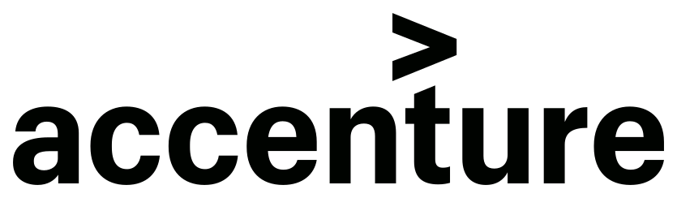
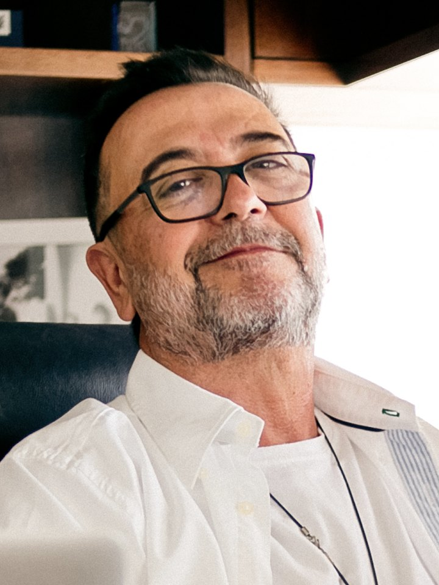
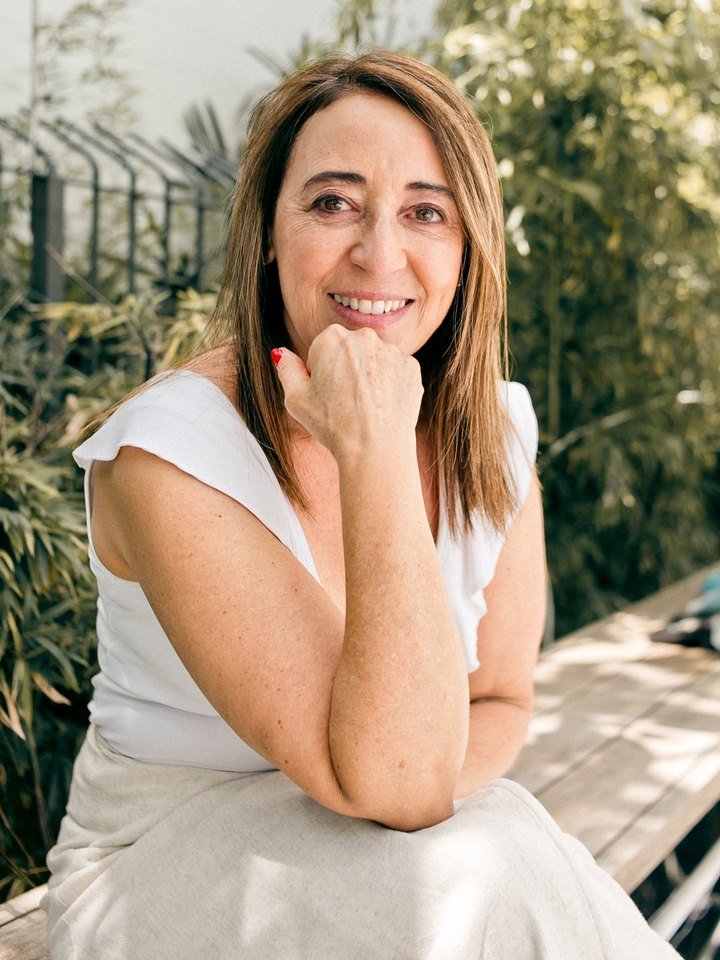
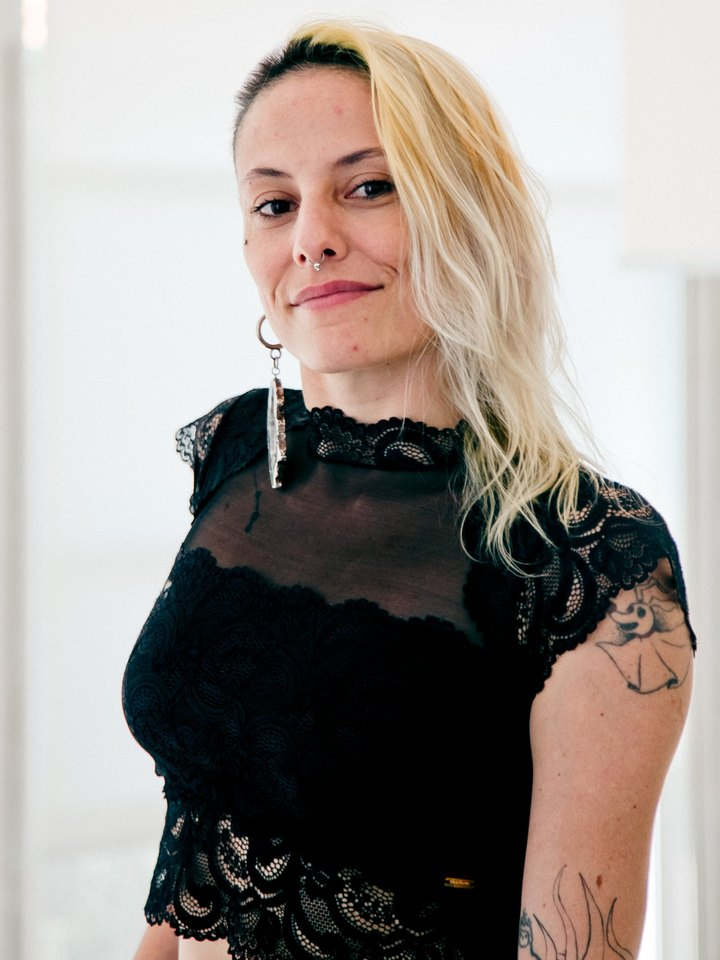
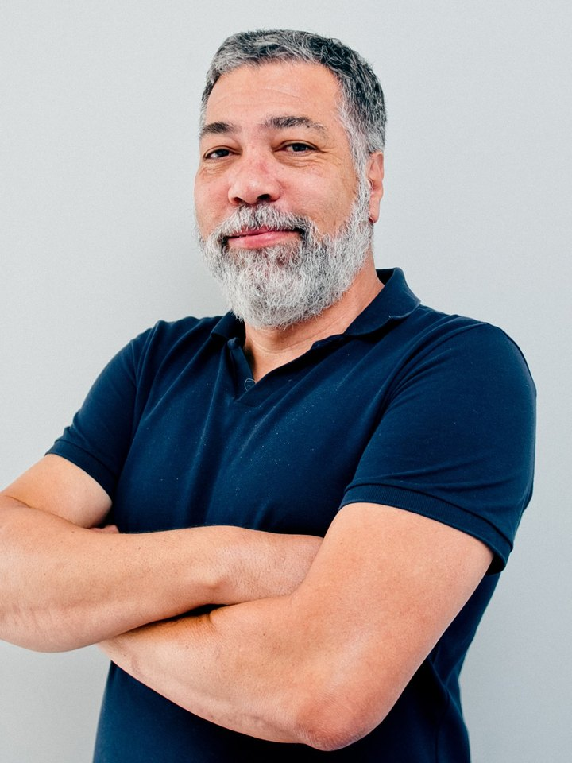
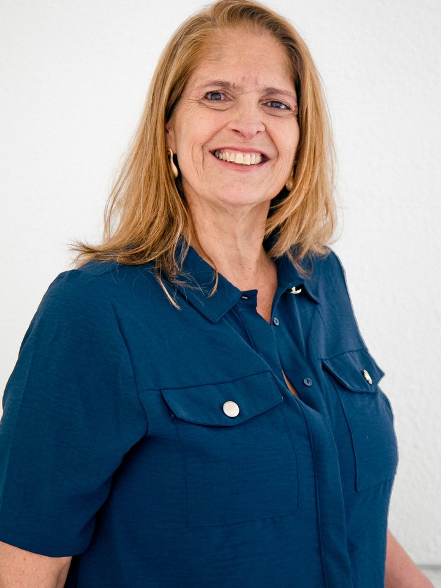
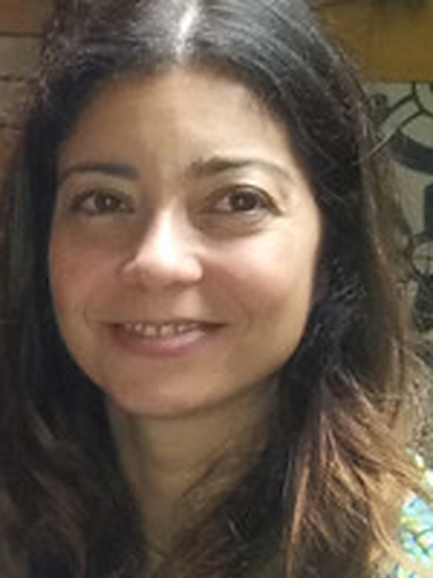
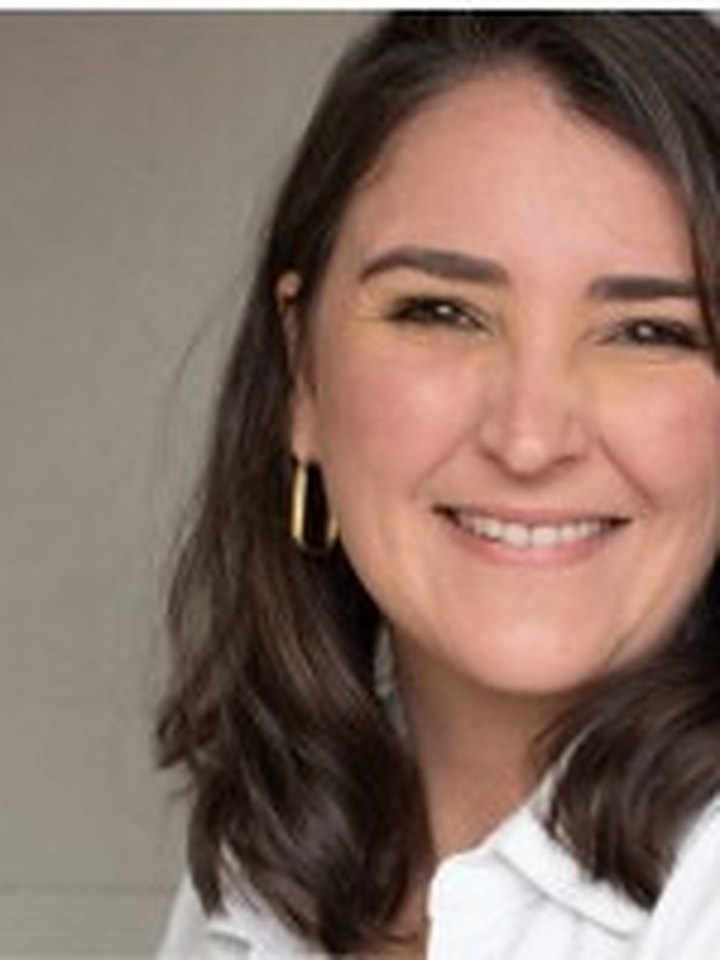
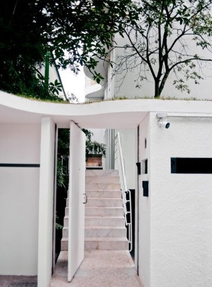
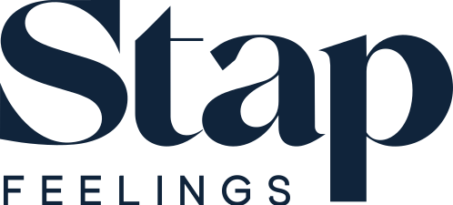

Do render
ao real.
O que o cliente aprova no render
é o que ele encontra montado.

 Render 3DEstande montado
Render 3DEstande montadoGrunner · Agrishow
Agência de design
São Paulo
A Stap® é uma agência de design. Integramos criação, arquitetura e produção para conceber e realizar projetos.
Criação, arquitetura, 3D, produção e atendimento no mesmo time, na mesma casa.
Do render
ao real.
O que o cliente aprova no render
é o que ele encontra montado.
Render 3DEstande montadoGrunner · Agrishow
Criamos para algumas das maiores marcas do Brasil, em todos os mercados.



Todos os
projetos
26 projetos
Design não é
uma etapa.
É como pensamos,
conectamos
e realizamos.
Fortalezas
Cinco capacidades integradas.
INTERPRETAR O BRIEFING, ACHAR A OPORTUNIDADE E CHEGAR A SOLUÇÕES QUE NÃO SÃO ÓBVIAS.
↗CONCEITOS, PRODUTOS E ESPAÇOS COM ARQUITETURA IN-HOUSE, DO CROQUI AO DETALHAMENTO.
↗MATERIAIS, SISTEMAS, MODULARIDADE E VIABILIDADE DESDE O PRIMEIRO TRAÇO.
↗PRODUÇÃO, LOGÍSTICA E MONTAGEM COORDENADAS PARA O APROVADO ACONTECER.
↗PESSOAS, PARCEIROS, PRAZOS E DISCIPLINAS EM UM SÓ FLUXO.
↗O que existe por trás de cada entrega.
Um time,
todas as etapas

RICARDO GOMES
FOUNDER

VIRGINIA CARRIERI
CEO

MARISE
CEO · AMEI DE PAIXÃO

CREMONESI
COO

SILMARA
DIRETORA FINANCEIRA

ADRIANO
ARQUITETO

KCO OYAKAWA
HEAD OF ART

PAULA
3D DESIGNER

WAGNER
ARTE FINAL

GEOVANI
HEAD DE PRODUÇÃO

ANA CÉLIA
PRÉ-PRODUÇÃO

FLÁVIA
GERENTE DE CONTAS

GIULIANA
GERENTE DE CONTAS

CACÁ
GERENTE DE CONTAS

BIA
SECRETÁRIA
TRABALHAR COM A STAP É SINÔNIMO DE CONFIANÇA, QUALIDADE E RESPEITO. SÃO VERDADEIROS PARCEIROS, CAPAZES DE TRANSFORMAR O IMPOSSÍVEL EM POSSÍVEL.
TRABALHAR COM A STAP PRA MIM É ME SENTIR EM CASA. É SABER QUE VOCÊ ESTÁ SENDO OUVIDA E TERMINAR CADA PROJETO COM A SENSAÇÃO DE QUE O MELHOR FOI FEITO POR TODOS.
A QUALIDADE E A CRIATIVIDADE DA STAP SÃO IMENSURÁVEIS. CONQUISTAMOS RECONHECIMENTO DOS NOSSOS CLIENTES ATRAVÉS DAS PRINCIPAIS FEIRAS DE NORTE A SUL DO PAÍS.
A STAP É UMA AGÊNCIA DIFERENCIADA, CRIATIVA E HUMANIZADA. TRABALHAMOS HÁ MAIS DE 15 ANOS JUNTOS E OS RESULTADOS SEMPRE FORAM SUPERADOS, ANO APÓS ANO.
COMO É BOM PODER CONTAR COM UM GRANDE PARCEIRO COMO A STAP! UMA EQUIPE COMPETENTE E COMPROMETIDA EM SUPERAR AS EXPECTATIVAS DE CADA ENTREGA.
UMA EQUIPE COM AMPLA EXPERTISE PARA REALIZAR DO PLANEJAMENTO À IMPLEMENTAÇÃO DO EVENTO. RECOMENDO COM CONVICÇÃO A STAP PARA QUALQUER EVENTO.
 Rua Prestes João, 140
Rua Prestes João, 140A casa da Stap




Sinta-se
em casa.
Prestes
João, 140
Mais que um escritório, uma casa de inspiração: um lugar para estar, criar, planejar e construir junto.
Vamos
almoçar?
Na Casa da Stap tem almoço.
Venha conhecer o estúdio e o time.
